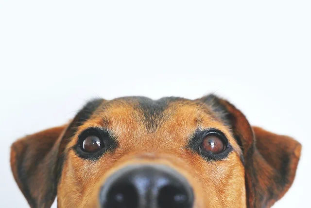
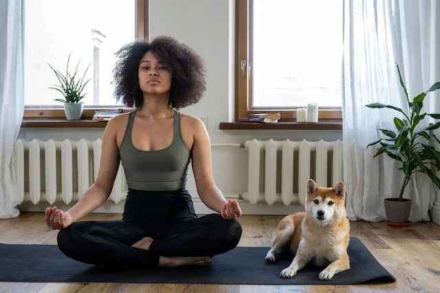
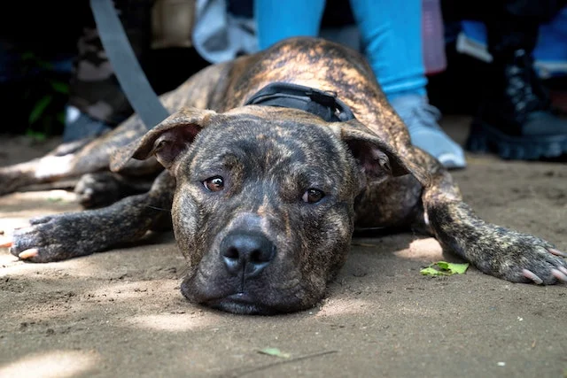

Blog
Consejos
Tener a un perro implica una gran responsabilidad. Aunque los consejos para cuidar a tu mascota son sencillos, se debe saber que serán para el resto de su vida, por lo tanto, cuidar a tu perro, o a ese perro que pretendes adoptar, no es tarea fácil. Además de facilitarle las cosas básicas como son la comida, el agua, el veterinario o hacer ejercicio, hay otros consejos que son importantes para que tu mascota esté feliz y con una salud de hierro.
Curiosidades

1. Los perros son capaces de detectar el cáncer
Numerosos estudios han confirmado que los perros pueden ser adiestrados para olfatear y detectar el cáncer u otras enfermedades.
¡Qué maravilla! Todo son beneficios con estos peludos.
2. Los perros descifran nuestras expresiones
Está demostrado por científicos que, de todos los animales, los perros son los únicos que pueden leer las emociones en la cara de sus humanos.
3. La nariz de los perros equivale a su huella dactilar
Si los perros tuvieran que identificarse con una huella lo harían mediante su nariz porque es única de cada uno.
La policía utiliza esto para saber si el perro de algún criminal ha estado en la escena de un crimen y así atraparlo.
4. ¿Quiénes fueron los primeros perros guía?
Los primeros perros que sirvieron de lazarillo fueron entrenados por los alemanes a finales de la Primera Guerra Mundial
para ayudar a los soldados que se habían quedado ciegos en la contienda.
5. Los perros son buenos estudiantes
¿Sabías que son capaces de aprender entre 200 y 500 palabras?
¡Si no te hace caso es porque no quiere no porque no te entienda!
6. Los perros huelen la enfermedad
¿No te has preguntado en más de una ocasión cómo tu perro percibe que estás enfermo y no se despega de tu lado?
Quizá la explicación esté en que los canes son capaces de oler una gran cantidad de compuestos orgánicos que producimos cuando algo no va bien.
Cuidados
Alimentación
Es una de sus necesidades fundamentales y no debemos, bajo ningún aspecto, descuidarla. Lo primero que tienes que tener en cuenta es que los perros
también tienen que seguir una dieta equilibrada, de modo que prevengamos la obesidad a la vez que les proporcionamos todos los nutrientes y energía que necesitan.
En el caso de los canes, podemos encontrar alimento seco y alimento húmedo. La elección de priorizar uno u otro siempre queda en manos del dueño y de las necesidades nutricionales del animal.
Por lo general, la mayoría suele optar por el alimento seco, pero puedes combinarlos y adaptar esta alimentación a tu perro, por ejemplo, si tiene una edad avanzada. En este punto, recomendamos siempre consultar con un veterinario.
No olvides que hay que adaptar la alimentación a cada edad y condición física del animal, ya que existen alimentos específicos para cachorros, adultos y perros de más edad.
Igualmente, procura proporcionarle un cuenco con agua fresca para que lo tenga cerca y pueda hidratarse siempre que lo necesite. Un perro bien nutrido se mostrará enérgico, contento y con el pelo brillante y suave.
Limpieza
1. Ventilar la casa a diario
Uno de los inconvenientes que tiene, por ejemplo, convivir con un perro es el olor. Estos animales poseen un olor más fuerte e intenso al que tendrás que acostumbrarte. Para tratar de minimizar su efecto es clave ventilar a fondo la casa todos los días e, incluso, varias veces al día.
Desde hace dos años, y a causa de la pandemia, nos hemos acostumbrado a abrir las ventanas sin miedo y, si vas a vivir con un perro, tendrás que seguir haciéndolo. Así renovarás el aire del interior de la casa y minimizarás el olor de tu mascota.
Si este sigue dominando tu casa, piensa en alguna solución específica para acabar con el mal olor: usar un ambientador adecuado o, mejor, un neutralizador de malos olores puede ser la solución.
Un truco: utiliza vinagre de manzana para limpiar la casa. Además de ser un potente limpiador es perfecto para acabar con los malos olores.
2. Mantener a tu mascota en perfecto estado de revista
Si quieres que tu casa esté limpia, antes debes extremar la higiene de tu perro. Como norma general puedes bañar a tu perro una vez al mes con productos específicos para él, aunque tendrás que limpiarlo más a menudo, cada vez que se ensucie, se meta en un charco o se llene de barro correteando por el parque.
Si lo tuyo son los gatos ya sabrás que ellos se limpian solos, aunque no está de más que vigilemos su higiene y los lavemos si ellos no lo hacen adecuadamente.
Ambos, perros y gatos, necesitarán que los cepilles a fondo con frecuencia. Esta es la manera de evitar que lo llenen todo de pelos o, al menos, de tratar de minimizar el problema.
Parásitos

¿MI PERRO TIENE PARÁSITOS?
Aunque generalmente pasen inadvertidos, no podemos descuidarnos y olvidar a los Parásitos , esos voraces invertebrados que consiguen llegar a nuestros perros sin ser vistos. Son tan ávidos, que consiguen adaptarse al ámbito de sus huéspedes en cualquier momento del año. Por eso es común que los perros se contagien de pulgas y garrapatas (los Parásitos externos más frecuentes), sobre todo en los perros que viven en zonas rurales. Además, los principales síntomas de este tipo de Parásitos , tales como picores o dermatitis alérgicas, son bastante evidentes. Pero, ¿qué ocurre con los Parásitos internos? Estos Parásitos no son visibles, por eso es muy importante que conozcas los síntomas que provocan para poder detectarlos y desparasitar a tu perro a tiempo, evitando problemas mayores. No olvides que desparasitar a tu compañero es algo que debes hacer regularmente.
Síntomas de un perro con parásitos externos
Las pulgas y las garrapatas pueden afectar a perros de todas las razas, de todas las edades y en cualquier entorno. Los síntomas que provocan estos Parásitos son bastante conocidos y además, normalmente son visibles, por lo que puedes confirmar el diagnóstico a simple vista. Cuando un perro tiene Parásitos externos, suele lamerse o rascarse con mucha frecuencia, lo que puede irritar su piel. Otro de los síntomas, menos evidente, es el cansancio por causa de la anemia que le pueden provocar las pulgas y las garrapatas que se alimentan de su sangre, siendo este un caso extremo de infestación por pulgas o garrapatas. Si tu perro sufre un caso de infestación de este tipo, es importante que acudas rápidamente a tu veterinario para iniciar un tratamiento de desparasitación de inmediato. De todos modos, no olvides que el collar antiparasitario para perros así como otros métodos de prevención que te explicaremos más adelante, pueden ayudar a evitar las pulgas y las garrapatas en perros.
Síntomas de un perro con parásitos internos
Las lombrices o gusanos en perros, son los Parásitos internos más comunes. Los síntomas varían según la edad y el estado físico de tu perro, pero en general, suelen provocar: diarreas, vómitos, pérdida de peso, irritación anal (puede rascarse o lamerse el ano para aliviar la irritación), decaimiento, anemia, alteraciones visibles en las heces como motitas blancas (gusanos) e inflamación del vientre, sobre todo en los cachorros.